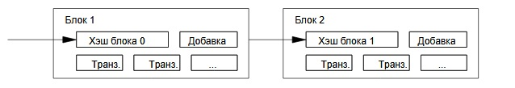

4. Доказательство работы
Чтобы реализовать распределенный одноранговый сервер меток времени, мы
используем схему «доказательства работы», подобную системе Hashcash
Адама Бека. Суть заключается в поиске такого значения, чей хэш (например,
SHA-256) начинался бы с некоторого числа нулевых битов. Требуется выполнить
объем работы, экспоненциально зависящий от числа нулей, но для проверки
найденного значения достаточно вычислить лишь один хэш.
В нашем сервере меток
времени поиск значения с нужным хэшем происходит путем перебора значения
итерируемого поля-добавки (nonce) в блоке данных. Как только
блок, удовлетворяющий условию, найден, его содержимое нельзя изменить, не
выполнив заново всей работы. И если он не является последним в цепочке, эта
работа включает в себя и перевычисление всех блоков, следующих за ним.

Доказательство работы через хэширование также решает вопрос об определении
версии, поддерживаемой большинством. Если голосом считается один IP-адрес, то
такую схему можно скомпроментировать, если контролировать большой диапазон
адресов. Наша схема основана на принципе «один процессор — один голос». Самая
длинная из хэш-цепочек выражает мнение большинства, которое вложило в нее
наибольшее количество ресурсов. Если более половины вычислительной мощи
принадлежит честным узлам, то цепочкач естных транзакций будет расти быстрее и
опередит любую конкурирующую цепь. Чтобы внести изменения в любой из
прошлых блоков, атакующему придется выполнить заново работу над этим блоком и
всеми последующими, а затем догнать и перегнать честных участников по новым
блокам. Далее мы покажем, что вероятность такого успеха
узлоумышленника, обладающего меньшими ресурсами, экспоненциально
убывает в зависимости от числа блоков.
Для компенсации возрастающей
вычислительной мощи процессоров и колебания числа работающих узлов в сети, сложность хэширования должна изменяться,
чтобы обеспечивать равномерную скорость генерации блоков. Если они появляются
слишком часто — сложность возрастает, и наоборот.